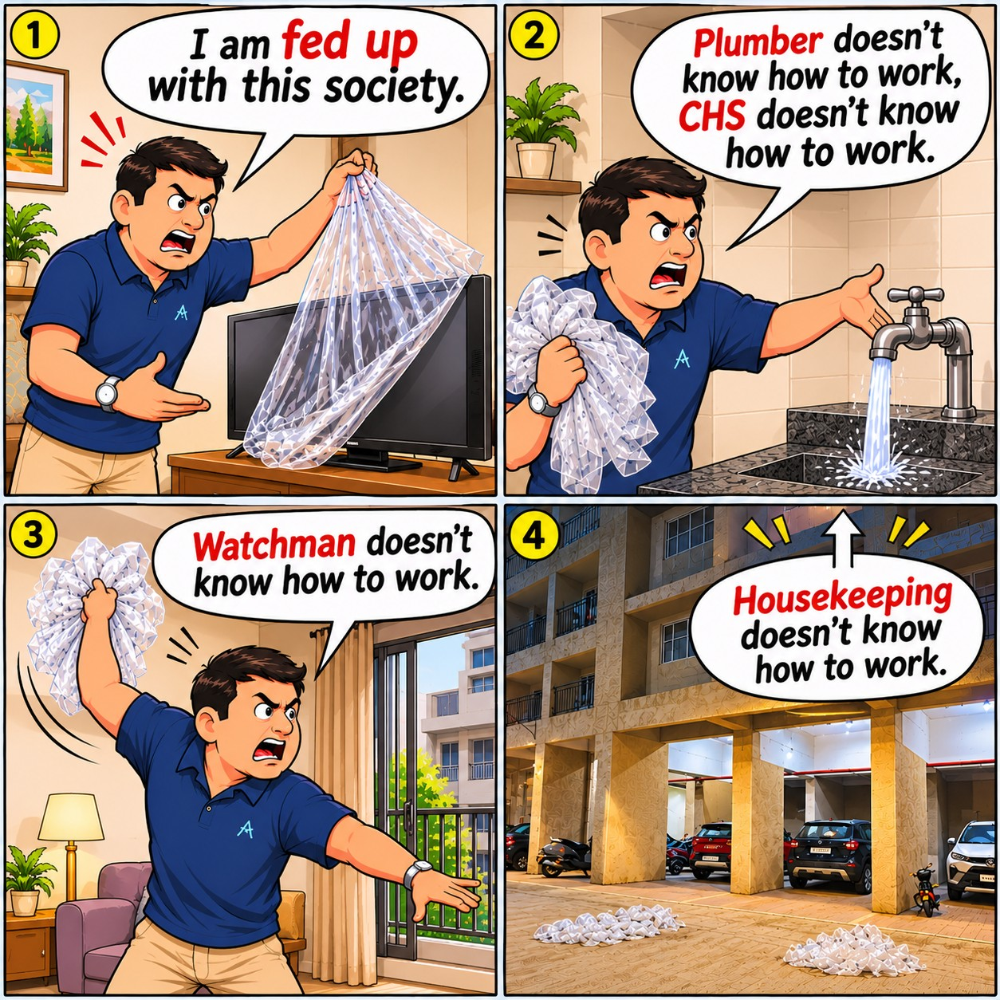
Cartoon Corner Cartoon Corner - One who knows all. 11 Nov 2026 · 15:01
Stories & updates
News Archive
Browse community articles and filter by tag.
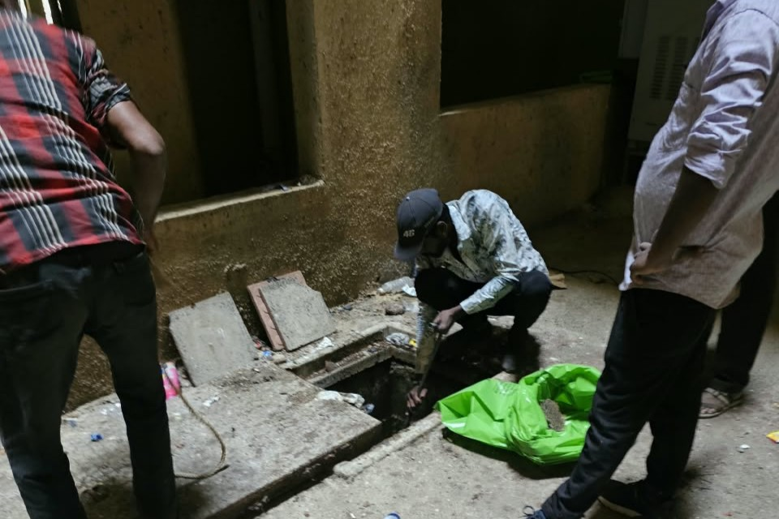
Community Updates LR R3 Sewer Drainage Cleaning Underway: Residents Urged to Keep Drains Clear 11 Nov 2026 · 14:37 The routine sewer drainage cleaning work for the entire LR R3 area is being carried out today as part of the community’s regular maintenance schedule. This cleaning exercise is conducted once every six months to ensure that the…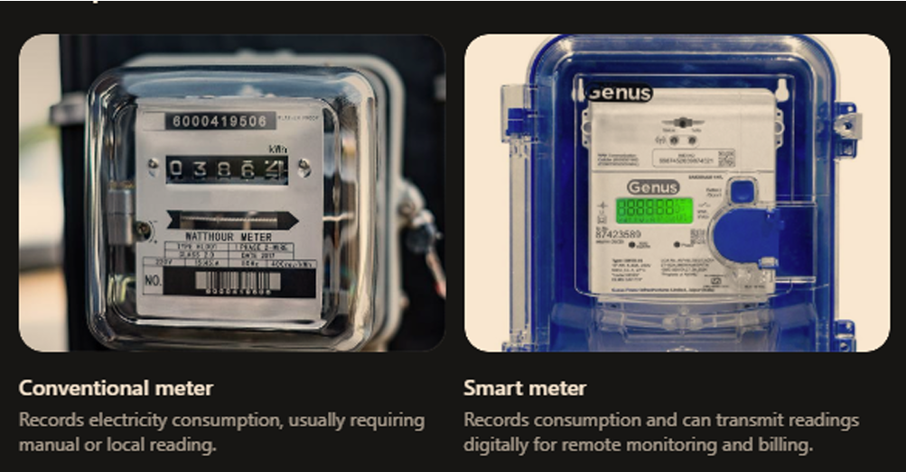
Utilities Smart Electricity Meters: Benefits, Concerns & What LR‑R3 Residents Should Know 07 Nov 2026 · 13:18 1. What Is a Smart Electricity Meter? A smart electricity meter is a digital device that records electricity consumption and automatically transmits readings to the electricity distribution company. Unlike conventional meters,…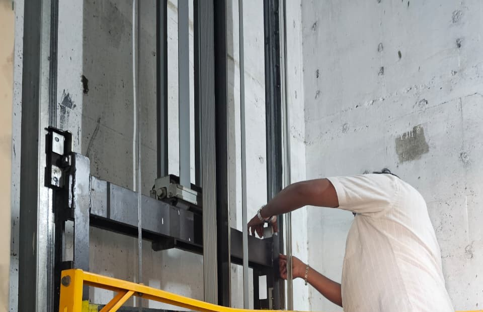
Community News E Building Elevator No. 1 Back in Service After Repairs 07 Nov 2026 · 12:33 Residents of Life Republic R3, E Building , can now use Elevator No. 1, which has been repaired and restored to normal operation following a breakdown. During inspection, the maintenance team identified that the brake shoe…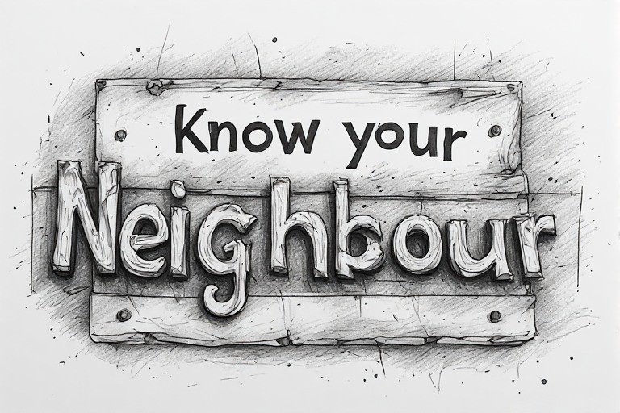
Community Know Your Neighbour – A New Initiative on LRR3News.in! 06 Nov 2026 · 22:52 LRR3News.in is launching a new community series called Know Your Neighbour . The initiative begins on 8 November 2026 and aims to feature a different resident from Life Republic, R3 Sector, every Sunday. Each feature will be a…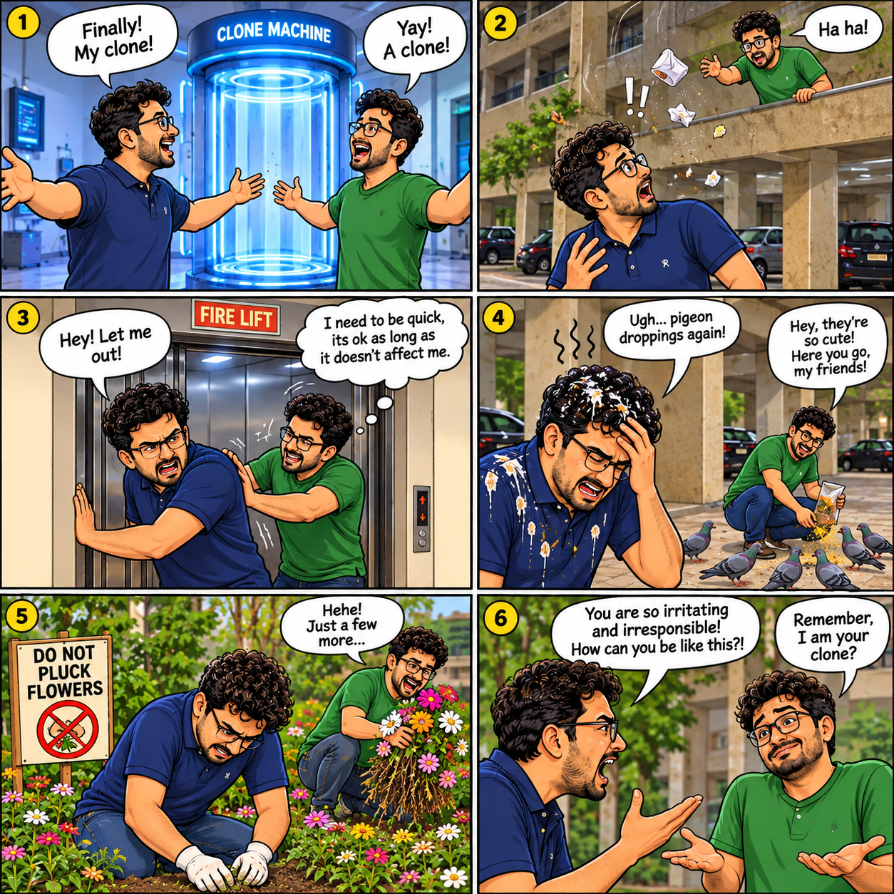
Cartoon Corner Cartoon Corner - Selfish Clone 04 Nov 2026 · 12:40 Community News
Water Supply Disruption Affects Flats in R3, Life Republic Township
30 Oct 2026 · 12:35
Residents of R3 in Life Republic Township are experiencing a temporary disruption in their water supply due to a delay in the regular water delivery from the township. The delay has affected the availability of water in…
Community News
Water Supply Disruption Affects Flats in R3, Life Republic Township
30 Oct 2026 · 12:35
Residents of R3 in Life Republic Township are experiencing a temporary disruption in their water supply due to a delay in the regular water delivery from the township. The delay has affected the availability of water in…
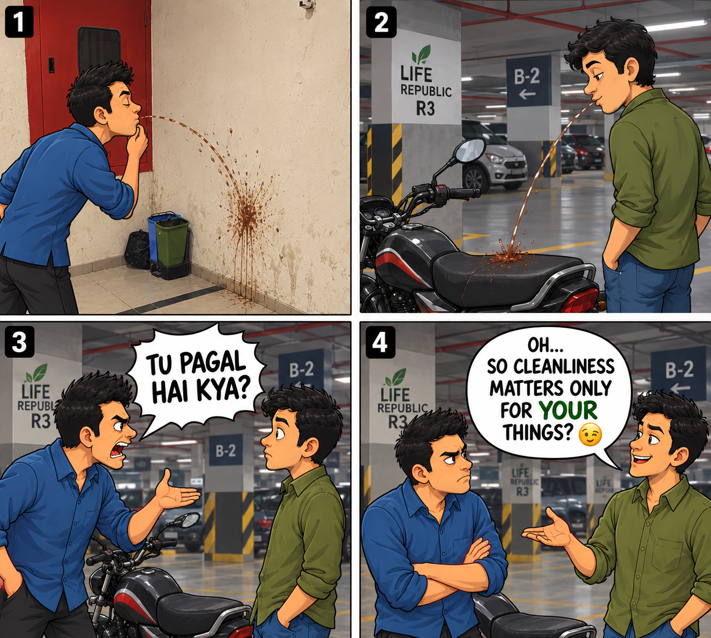
Cartoon Corner Cartoon Corner - Spit Satire 28 Oct 2026 · 10:36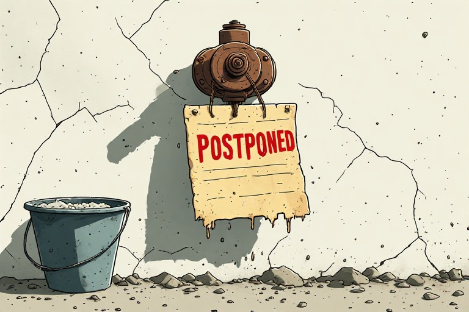
Community Water Shortage Delays Society Tank Cleaning 27 Oct 2026 · 15:30 The cleaning of water tanks within the society has been postponed indefinitely due to a shortage of water. The cleaning work, which was scheduled for the third and fourth weeks of October 2026, will not take place as planned.…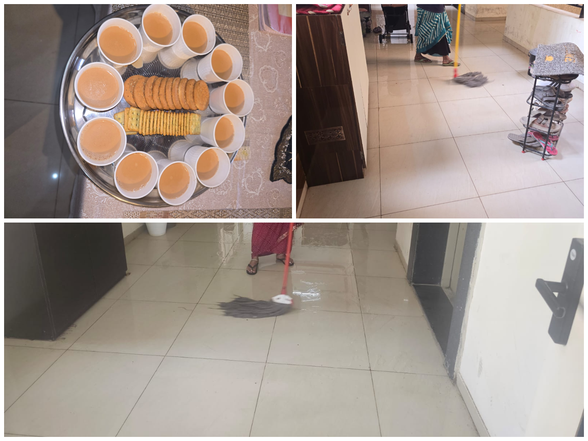
Community Diwali Cleaning Drive Begins at Life Republic R3 25 Oct 2026 · 15:33 Ten housekeeping staff members are working across five buildings to give common areas a festive-season refresh. The festive season preparations are underway at Life Republic R3, with the housekeeping team beginning a special…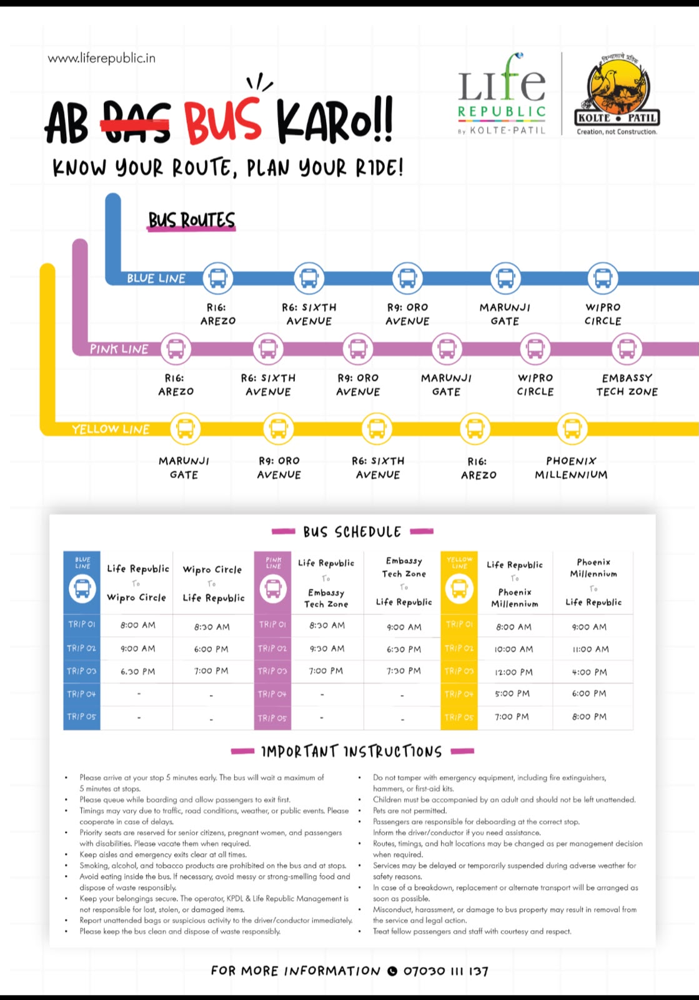
Community Life Republic Revises Bus Routes and Schedules for Residents 25 Oct 2026 · 10:03 Life Republic Revises Bus Routes and Schedules for Residents The Life Republic Facility Management Team announced a revised schedule for bus services, following suggestions received from residents. The revision follows the…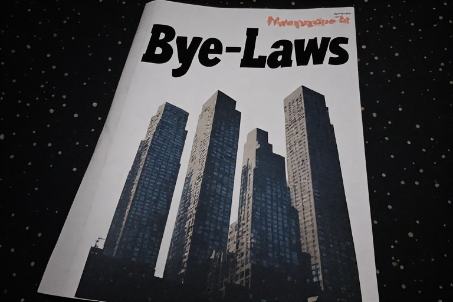
Community Why Housing Society Bye-Laws Matter for Residents 24 Oct 2026 · 13:13 OPINION: WHY HOUSING SOCIETY BYE-LAWS MATTER A practical perspective for residents of Life Republic R3 A housing society is more than a collection of apartments. It is a community where residents share facilities, expenses,…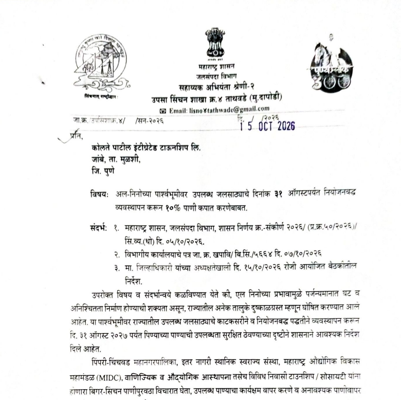
Community News Government GR to Kolate Patil about Domestic Water Shortage Management Till Aug 2027 24 Oct 2026 · 12:16 Government Directs Kolte-Patil to Implement Water Conservation Measures Until August 2027 In view of the anticipated impact of the El Niño phenomenon on rainfall and the growing risk of water scarcity across Maharashtra, the…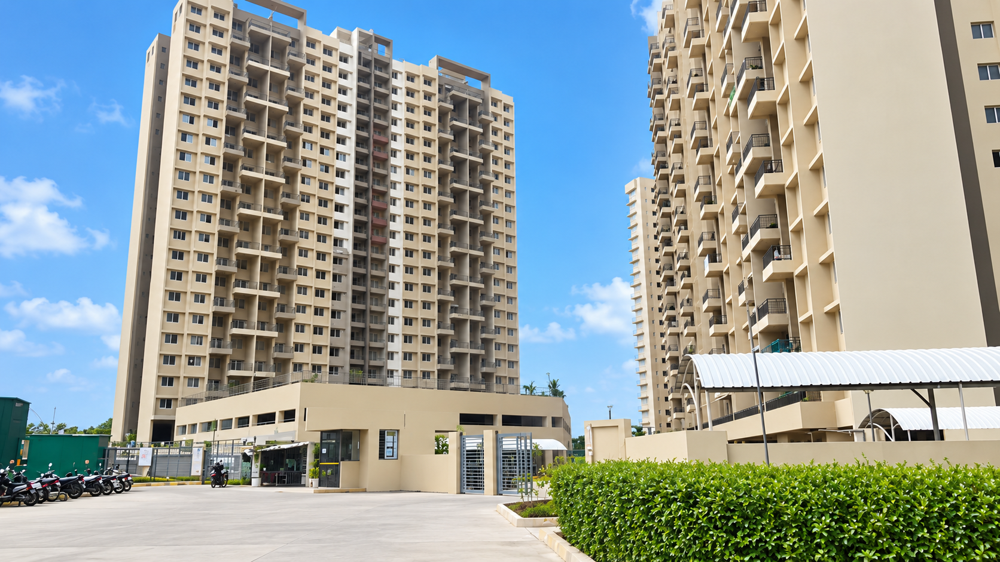
Community Life Republic News Portal (LRR3News) Launch Announcement 23 Oct 2026 · 13:47 Hello, Namaste, and Namaskar! Welcome to the Life Republic News Portal — LRR3News! Official Launch: 25 October 2026 The idea behind this initiative is simple: to create an independent platform where residents of Life Republic…Editorial note: Please read article disclaimers and verify time-sensitive notices with the relevant society office.